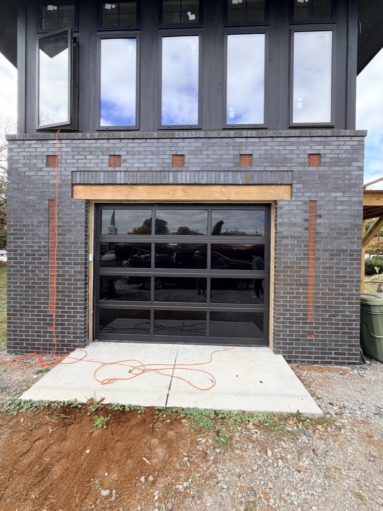
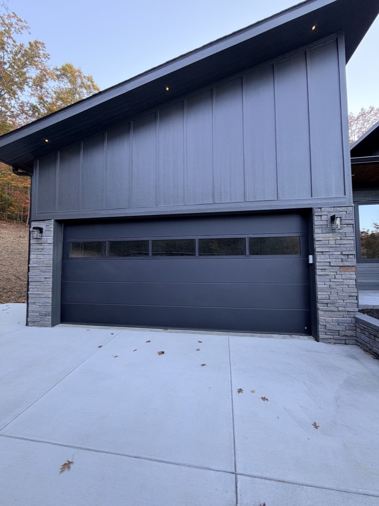
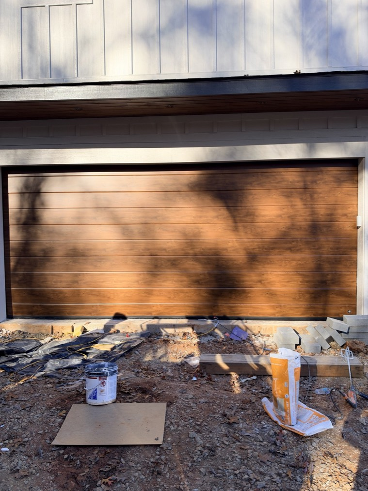

Home / Hendersonville, NC
Garage door installation and repair in Hendersonville and Henderson County. New doors from $1,950 installed, springs from $290, openers from $300.
Hendersonville, NC
Viking Garage Door is based in Boiling Springs, SC, and we work up the I-26 corridor in Hendersonville and the surrounding area. A lot of our recent work is new construction: modern flush doors, full-view glass doors and wood-look steel doors that suit mountain homes. We also handle the everyday jobs — broken springs, off-track doors, worn rollers and old openers. You talk directly to the owner and get a written price before any work starts.
Services & Prices
| Service | Details | Price |
|---|---|---|
| New door installation | Modern flush, full-view glass, wood-look and traditional steel doors | from $1,950 |
| Spring replacement | Torsion springs, parts & labor included | from $290 |
| Opener replacement | Belt, chain and wall-mount openers | from $300 |
| Tune-up & safety check | Lubrication, balance, sensors, hardware | $120 |
Recent Work



Yes. We are based in Boiling Springs, SC and take garage door installation and repair jobs in Hendersonville and nearby towns. Call or text (864) 921-7373 to schedule.
New garage doors start at $1,950 per door installed. We give you an exact written price before any work begins.
Call or text a photo of your door — we will tell you what it needs and what it costs.